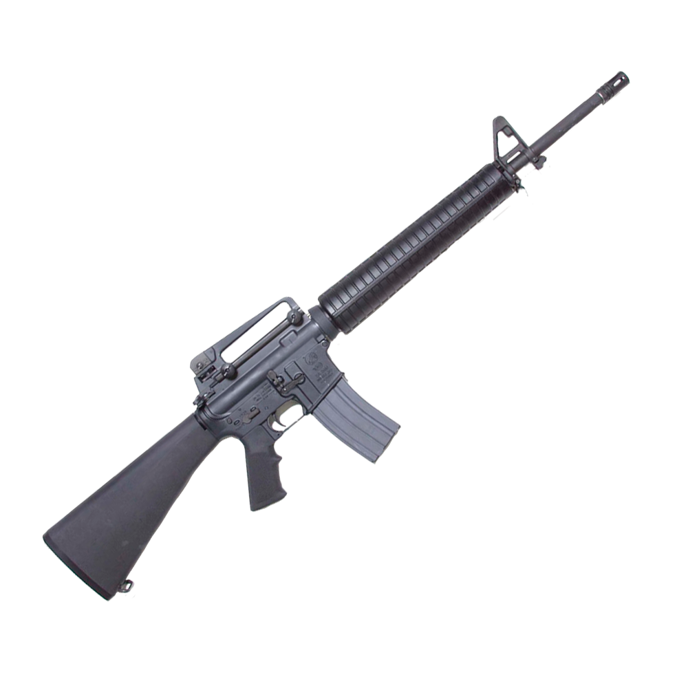
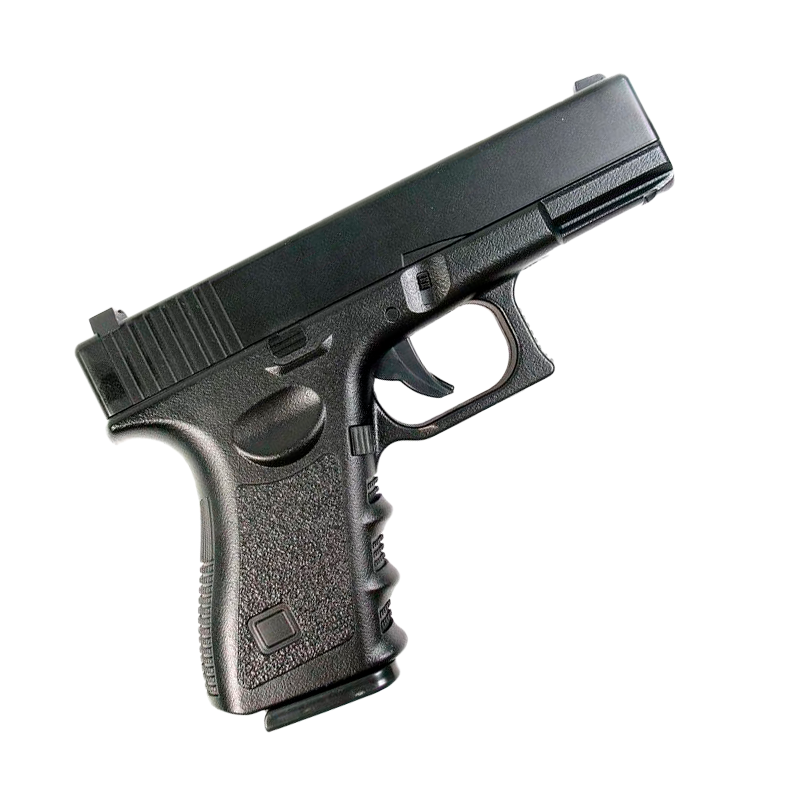

Автомат Калашникова

Автомат, принятый на вооружение в СССР в 1949 году; индекс ГРАУ — 56-А-212. Был сконструирован в 1947 году М. Т. Калашниковым после провала предыдущего образца, АК-46, на конкурсных испытаниях 1946 года. В АК использованы технические решения, позаимствованные у других конструкторов. АК и его модификации являются самым распространённым стрелковым оружием в мире, он включён в Книгу рекордов Гиннесса: насчитывается более 100 млн единиц этого автомата.он состоит на вооружении 106 стран мира.…
М16
Американская штурмовая винтовка калибра 5,56 мм, разработанная и принятая на вооружение в 1960-х годах. M16 и её модификации до настоящего времени остаются основным образцом стрелкового оружия всех пяти видов вооружённых сил, силовых структур и полицейских подразделений США, а равно и других стран мира. Это одна из наиболее распространённых моделей стрелкового оружия в мире — было выпущено более 8 миллионов экземпляров.…
Glock 17
Австрийский пистолет, разработанный фирмой Glock для нужд Вооружённых сил Австрии. Глок 17 стал первым образцом вооружения, разработанным этой фирмой. Получившийся в результате образец оказался довольно удачным и удобным для применения, благодаря чему позднее он был принят на вооружение Вооружённых сил Австрии под обозначением Р80. Благодаря своим боевым качествам и надёжности получил широкое распространение в качестве гражданского оружия самообороны.…